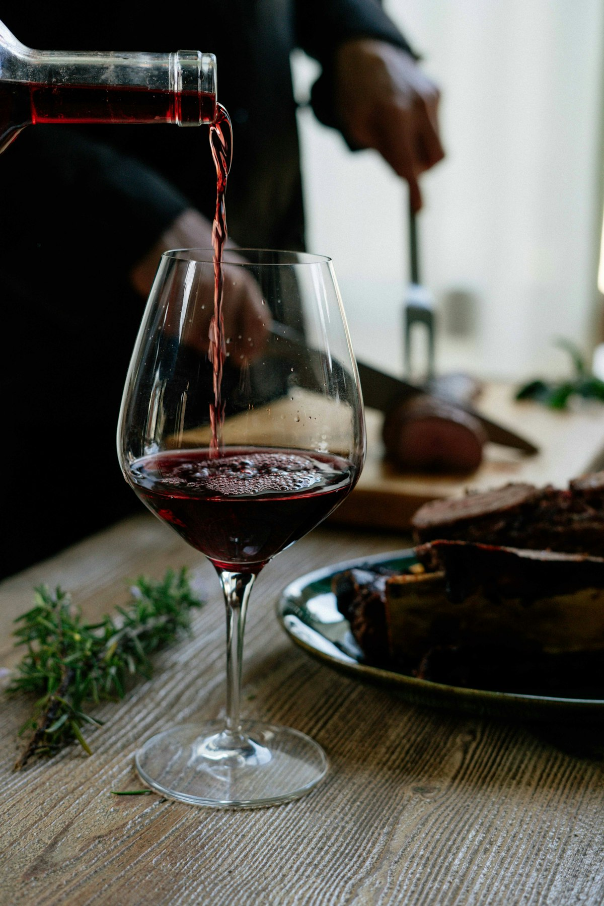

Bereiding
Haal de zalm een half uur voor het bakken uit de koelkast en dep het vel goed droog. Droog vel wordt krokant vel.
Zet de sjalotten met de wijn en de azijn op middelhoog vuur en laat inkoken tot er nog een paar eetlepels vocht over zijn.
Draai het vuur laag en klop de koude boter er blokje voor blokje door. Laat de saus nooit koken, dan schift hij. Breng op smaak met citroensap, zout en peper.
Verhit een pan tot de olie glanst. Bak de zalm op het vel in 5 tot 6 minuten krokant, draai kort om en haal de pan van het vuur. De restwarmte gaart hem af.
Serveer de zalm op de saus, met bieslook erover. Eerst de saus op het bord, dan de vis. Zo blijft het vel krokant.

Een strakke witte bourgogne
Beurre blanc vraagt om frisheid met een beetje vet. Een chardonnay zonder zware houtlagering snijdt door de botersaus heen en tilt de zalm op. Welke fles ik nu op tafel zet, deel ik in de groepsapp.
Proef mee